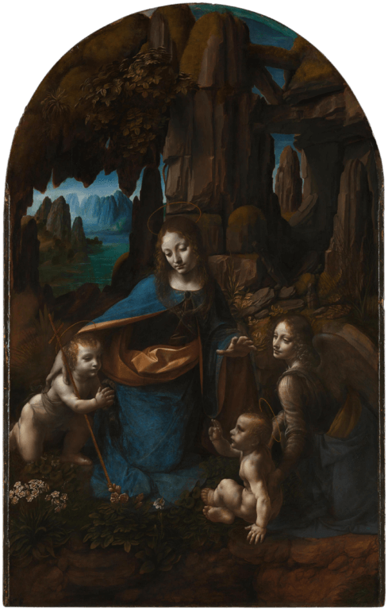

La Virgen de las Rocas - por Leonardo Da Vinci
The Virgin of the Rocks (sometimes The Madonna of the Rocks) is the name used for two
Leonardo da Vinci's paintings, of the same subject, and of a composition which is identical except for
two significant details. One painting usually hangs in the Louvre, Paris, and the other in the National
Gallery, London. Both paintings show the Madonna and Christ Child with the infant John the Baptist and an
angel, in a rocky setting which gives the paintings their usual name. The significant compositional
differences are in the gaze and right hand of the angel. There are many minor ways in which the works
differ, including the colours, the lighting, the flora, and the way in which sfumato has been used.
Although the date of an associated commission is documented, the complete histories of the two paintings
are unknown, and lead to speculation about which of the two is earlier.
A wish to get to the heart of nature and know the secrets was perhaps Leonardo da Vinci's main impetus in
everything he did; and such interest as he had in the painting might almost have been to set up rivals to
nature, fusing all his knowledge of her into the creation of things super-natural. In The Virgin of the
Rocks, the laws are nature's but the final creation Leonardo's. And he here defies the natural in many ways
that cut across previous artistic assumptions. The result is organic rather than intellectual. Other painters
threw a deliberate schema over nature, seeing it in terms of conscious mingling, enriched by art, whereby
buildings were allied to scenery, minor groups of figures enlivened background spaces, and objects were
artistically re-arranged to mirror a cosmic order. This showed the artist's invention. In this painting,
Leonardo designs a grotto which is marvelous for seeming not human work at all. It appears the product of
natural forces: the rocks ribbed and smoothed by the constant motion of water, present in the winding river
but felt in the subaqueous light and as giving moisture for the plants - each recorded with botanical
accuracy - that grow so thickly and yet are pallid.
It still seems a region untrodden by man, because the figures who kneel in the grotto have something of
the same inevitable growing quality as the plants; they are no stranger in their setting, and there is
no sense of their incongruity within it.
Louvre version

The Virgin of the Rocks which usually hangs in the Louvre is considered by most art historians to be the
earlier of the two and date from around 1483-1486. Most authorities agree that the work is entirely by
Leonardo. It is about 8 cm (3 in) taller than the London version. The first certain record of this picture
is in 1625, when it was in the French royal collection. It is generally accepted that this painting was
produced to fulfill a commission of 1483 in Milan. It is hypothesized that this painting was privately
sold by Leonardo and that the London version was painted at a later date to fill the commission. There
are a number of other theories to explain the existence of two paintings. This painting is regarded as a
perfect example of Leonardo's "sfumato" technique.
London version

A very similar painting in the National Gallery, London, is also ascribed to Leonardo da Vinci, and
ascribed a date before 1508. Originally thought to have been partially painted by Leonardo's assistants,
the study of the painting during the recent restoration has led the conservators to conclude that the greater
part of the work is by the hand of Leonardo. It was painted for the chapel of the Confraternity of the
Immaculate Conception, in the church of San Francesco Maggiore in Milan. It was sold by the church, very
likely in 1781, and certainly by 1785, when it was bought by Gavin Hamilton, who took it to England. After
passing through various collections, it was bought by the National Gallery in 1880.